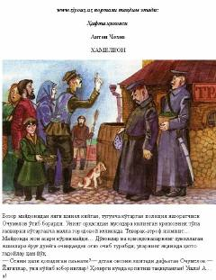

HVaziyat va mansabga qarab o'zgaruvchi insonlar haqidagi mashhur hajviy hikoya.
Anton Chexovning ushbu mashhur hikoyasida mansabdor shaxslarning vaziyatga qarab o'z fikrini tezda o'zgartirishi, ya'ni 'tovlamachiligi' hajviy tarzda tasvirlangan. Asar o'zbek adabiyotining yirik namoyandasi Abdulla Qahhor tomonidan mahorat bilan tarjima qilingan. Hikoyadagi Ochumelov obrazi orqali jamiyatdagi laganbardorlik va ikkiyuzlamachilik illatlari fosh etiladi.